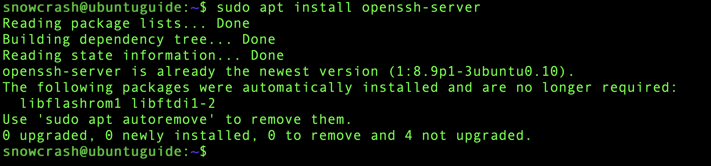
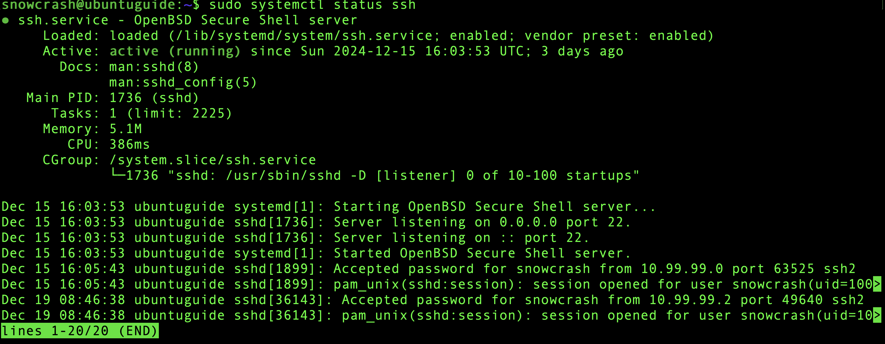
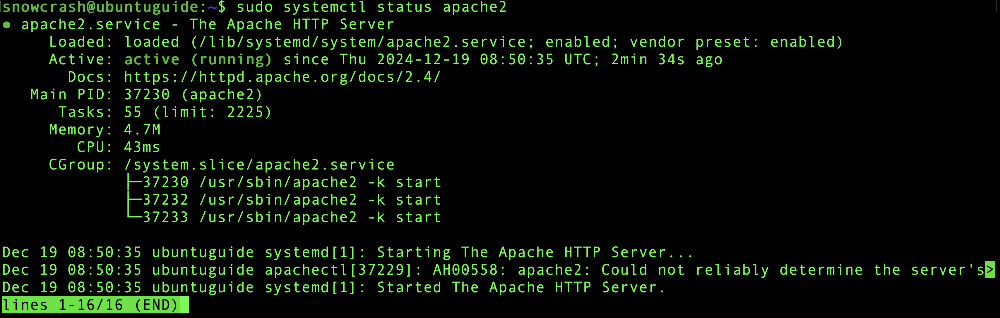
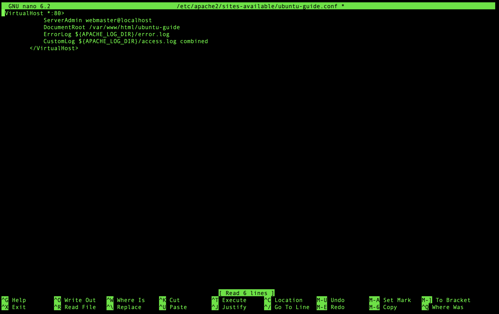

Her er en trinnvis guide for å opprette en virtuell maskin, installere en Ubuntu-webserver, og sette opp Apache.
Trinn 1: vSphere
- Logg inn på vSphere Web Client
Åpne en nettleser, naviger til vSphere Web Client URLen, og logg inn med dine legitimasjoner.
- Naviger til riktig datalager
I navigasjonsruten til venstre, utvid datalagersenteret og deretter datalageret der du ønsker å opprette den virtuelle maskinen.
- Opprett en ny virtuell maskin
Høyreklikk på datalageret, velg `Ny virtuell maskin`, og følg trinnene for å konfigurere og opprette VMen.
- Start og installer Ubuntu på VM
Etter oppretting, skru på VM-en, åpne konsollen, og følg installasjonsinstruksjonene for Ubuntu.
Trinn 2: Installere OpenSSH
- Oppdater pakkelisten
sudo apt update - Installer OpenSSH-serverpakken
sudo apt install openssh-server - Bekreft at SSH-tjenesten er aktiv
sudo systemctl status ssh - (Valgfritt) Konfigurer SSH
Rediger SSH-konfigurasjonsfilen om nødvendig og husk å restarte SSH-tjenesten etterpå.
Trinn 3: Installere Apache 2
- Oppdater pakkelisten
sudo apt update - Installer Apache 2-pakken
sudo apt install apache2 - Bekreft at Apache-tjenesten er aktiv
sudo systemctl status apache2 - Test Apache-serveren
Åpne en nettleser og naviger til din server-IP for å se Apache oppstarts-siden.
Trinn 4: Hosting av nettsiden
- Plassering av nettsiden i riktig mappe
For at Apache skal kunne serve din nettside, må nettsidens filer plasseres i `/var/www/html`.
Først, anta at alle nettsidefilene dine er i en mappe kalt `minside` på din lokale datamaskin. For å overføre denne mappen til serveren, kan du bruke `scp`:
sudo scp -r minside /var/www/html/ - Gi riktige tillatelser
For at Apache skal kunne lese og serve filene dine, må du sikre at de har riktige tillatelser:
sudo chown -R www-data:www-data /var/www/html/minside - Opprett en VirtualHost for din nettside
- Opprett en ny konfigurasjonsfil for din nettside:
sudo nano /etc/apache2/sites-available/minside.conf - Legg til følgende i `minside.conf`:
<VirtualHost *:80> ServerAdmin webmaster@localhost DocumentRoot /var/www/html/minside ErrorLog ${APACHE_LOG_DIR}/error.log CustomLog ${APACHE_LOG_DIR}/access.log combined </VirtualHost> - Aktiver din nye site-konfigurasjon:
sudo a2ensite minside.conf - Deaktiver standard konfigurasjonen:
sudo a2dissite 000-default.conf - Last inn Apache med de nye innstillingene:
sudo systemctl reload apache2
- Opprett en ny konfigurasjonsfil for din nettside:
- Test nettsiden
Åpne en nettleser og besøk serverens IP-adresse eller domenenavn. Du skal nå se nettsiden din!